We have a modern, well equipped state of the art production facility with an annual capacity of 10 million plants per annum. The laboratory is having 2137.12 Sq. Mtr build up area for the operations and it comprises of two main sections sterile area and non-sterile area. Sterile areas (Bio clean) is having a sterility level of class 10,000. Non sterile area is having media preparation, plant washing, grading and packing area. We also have state of the art plant hardening facility in 16571 sq. mtr. area.
Washing room:
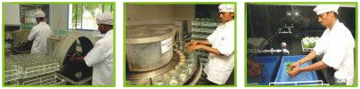We have a separate area for washing, drying and storing of glassware. We have a bottle washing machine which takes care of quality washing process. Contaminated culture bottles are kept separately and washed thoroughly. Overall cleanliness is maintained during the entire process so that there is no trace of used media. After washing with normal water , the containers are rinsed with deionized water and dried.
Media Preparation Facility:
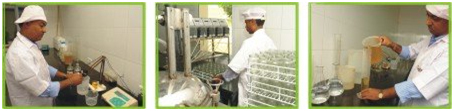Our media Preparation facility (Lab Associates LA-50/V18) is equipped with dispensing system, with a capacity of 720 litres media preparation per day. Automatic media preparation specially designed unit for mixing and sterilizing media. Improved user programming capabilities, sterile steam generator, Process control unit, heating control unit and sterile air supply has made this unit a unique plant tissue culture laboratory. Our media room is well equipped with basic equipments like pH meter, weighing balance (electronic) , conductivity meter , distillation unit, RO water facility, etc.
Autoclaving:
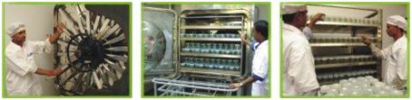Our high capacity sterilizers are with Microprocessor based automatic process sequence control system. In addition to the standard use of steam at higher temperature as the sterilizing agent, this unit also employs the vacuum system for added advantage in the sterilization process. After autoclaving the media, it is stored for 2-3 days to check microbial contamination before use.
Quality Control:
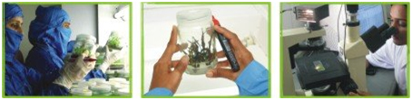In order to maintain disease free culture, we have separate room for quality check. Every culture is checked before processing to the next stage. Our highly experienced and qualified team members perform the in process quality check (IPQC).
Virus Indexing:
Virus indexing for all the varieties of crop ensure elimination of affected plant before micro-propagation. Virus testing is done from the established and government accredited laboratory.
Plant Inoculation Room:
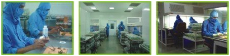The activity of segregating and transferring cultured plant material is being done in our Plant Inoculation room. Five fully controlled and sophisticated plant inoculation rooms with total 43 laminar flow benches with a seating capacity of 86 operators. Class 10000 is maintained by fumigating the room periodically with sterilant and regular monitoring of air borne microbes. Highly skilled, trained and efficient operators handle the cultures by strictly following SOP.
Growth Room:
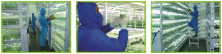The growth room is designed to grow cultures with controlled light, humidity and temperature. We have seven State – of – the art growth rooms with best accuracy and reliability. Total culture holding capacity is of 65 lac cultures at a time. Growth rooms are equipped with highly modern Air Handling Units and Screw Chiller. Culture racks are fitted with the fluorescent tube lights to ensure optimum availability of light for proper growth of the cultures. The rooms are fumigated periodically to keep the contamination under control. Each growth room has capacity to maintain different temperatures. Growth room area sterility is also maintained to control contamination.
Greenhouse:
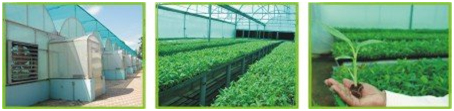We have climate controlled greenhouses in an area of 1800 sq mt for the primary hardening of 15 lac plants/cycle. Green houses are maintained at desired temperature and humidity with the help of latest control panels. Plants are monitored regularly for their growth and presence of any disease or pest. Periodical and timely spraying of suitable chemicals are carried out with proper recording and reference.
Shade house:
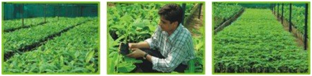We have 13500 sq mt of the shade house area equipped with foggers and misters for the secondary hardening of the plants at Hirapur, Ahmedabad. We have in total of 70000 sq mt areas for plant hardening in the states of Gujarat, Maharashtra, UP, Karnataka and Tamil Nadu. PAN India hardening facility assures timely delivery of the plants through out the country in time. Utmost care is taken for selection of proper tray, potting mixture, during washing of plants, water for irrigation. All records pertaining to transfer of plants are maintained for tracking of movement of plants.
Bio Formulation laboratory has latest equipments and technology to produce quality products. Production is done under the strict supervision of qualified members. Biomass is grown under aseptic conditions and harvested under optimum conditions. Every input is passed through stringent quality control before using in the production. Technologies developed by reputed organizations are used for innovative products. Production laboratory has a capacity and capability to produce all products in house.
Autoclave:
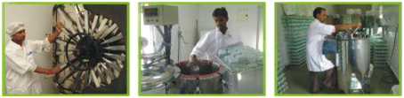In order to inactivate all bacterias, viruses, fungi and spores from media and sterilize lab instruments autoclaves are used. We have three autoclaves especially for our Bio-formulation.
Media Making Machine:
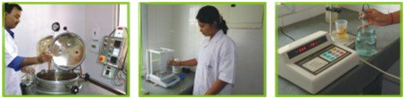We have media making machine which has the capacity of 100 litres at a time.
Laminar Air flow Units:
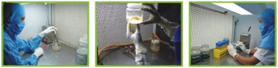We have three LAFs with seating capacity of six operators for culture inoculation and processes.
Bottle Washing Room:
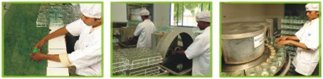We have a separate area for washing, drying and storing of glassware. Semi automatic bottle washing machine takes care of quality washing process. Contaminated culture bottles are kept and washed separately. Overall cleanliness is maintained during the entire process so that there is no trace of media left in the bottle. After washing with ordinary water, the bottles are rinsed, deionized and dried. Proper provision for discarding used gelrite is available.
Harvesting Machine:
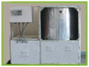The biomass is harvested through automatic harvesting machine having capacity to harvest 180 litres. Biomass is harvested using defined harvesting media.
Tray Dryer:
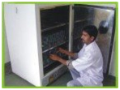The harvested roots are dry in tray dryer machine at 40 degree Celsius till it attains desired moisture content.
Blending Machine:
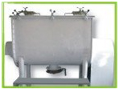Blending machine or blender is used for formulating final product. Products are blended scientifically so uniform product is available.
Silo:
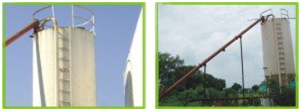Raw material is stored in big silo of 20 MT capacity. It is directly connected with blending machine for final blending.
Tablet Machine:
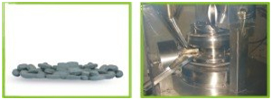Amongst various forms of products we also have tablet as one of the form. Tablet making machine has a capacity to produce 300,000 tablets/shift. It is state of art machine giving finest output in form of tablets.
Microscopes:
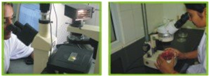Latest stereomicroscope with high resolution attached with camera is used for spore counts in final product. Such instruments allow us to give desired infective propagules per gram of product. Various other instruments required for microbiological laboratory are also available with us and are operated by trained members.
Tissue Culture Plants
10 Million Plants / Annum
| Sr. | Product | Monthly Production Capacity* |
|---|---|---|
| 1. | PSB (Mycorrhiza) | 30 tonnes |
| 2. | Mycorrhiza - Tablet | 10,00,000 Nos. |
| 3. | Aspergillus niger | 30 tonnes |
| 4. | Protein Hydrolysate – Liq. | 2000 litres |
| 5. | Protein Hydrolysate –Granule | 30 tonnes |
| 6. | Potassium Humate – Powder | 1000 kg |
| 7. | Potassium Humate – Liquid | 2000 litres |
| 8. | Potassium Humate - Granule | 30 tonnes |
| 9. | Natural Potash | 10000 tonnes |
| 10. | Brassinolide (Fruit Growth Enhancer) | 1000 litres |
| 11. | Efficiency Improver | 3000 litres |
| 12. | Natural Sulphur | 2000 litres |
| 13. | Bentonite Sulphur | 30 tonnes |
| 14. | Trichoderma viride | 1000 tonnes |
* Production capacity is on single shift basis of eight (8) hrs / Month.